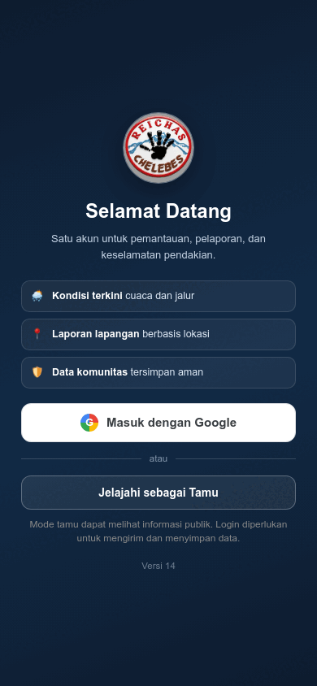

Saat aplikasi dibuka pertama kali, pilih cara akses sesuai kebutuhanmu.
Pilih “Jelajahi sebagai Tamu”
Cocok untuk mengecek kondisi, membaca panduan, atau melihat peta tanpa membuat data akun.
Kenali tanda Mode Tamu
Chip “Mode Tamu” dan banner login akan tampil di beranda sebagai pengingat.
Masuk saat diperlukan
Ketika membuka fitur yang menyimpan atau mengirim data, aplikasi menampilkan dialog login.
Privasi tamu: profil tamu hanya disimpan di perangkat dan tidak dibuat sebagai akun di server.